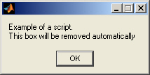

はじめに
制御アルゴリズムを設計し実現するプロセスは、組織によって異なります。しかし、いくつかの基本手順は共通しています。このデモでは、MathWorks 製品をこのような共通の基本手順に適用する相互作用を説明します。提供されている Simulink® モデルと Real-Time Workshop® Embedded Coder を使用して、モデルのコードを生成し、生成したコードを既存のシステムに統合し、シミュレーションと実行可能ファイルの結果を検証します。
目次
形式
このデモは、以下の 7 つのモジュールで構成されています。
- モデルの理解
- データ インターフェイスの設定
- 生成したコード内の関数を分割
- Simulink モデルと生成したコードから外部 C コードの呼び出し
- 生成したコードを外部環境に統合
- 生成したコードのテスト
- 生成したコードの評価
各モジュールでは以下の情報が示され、それまでのモジュールで説明され生成したものに基づいて進められます。
- 所要時間の目安
- 目的
- モジュールの目的の達成に役立つ背景情報、モデル、タスク、およびタスク アクティベーション リンク
- 前後のモジュールへのリンク
- モジュールのトピックに関する詳細情報 (タスクを完了する代わりの方法を含む) へのリンク
このデモでは、デモの使用を単純化するスクリプトを使用します。スクリプトによって実行されるすべてのことは、MATLAB® プロンプトまたは Simulink メニューから実行できます。スクリプトを実行するには、タスク リンクをクリックします。たとえば、以下のリンクをクリックすると、リンクの下に表示されているダイアログ ボックスを簡単に表示するスクリプトが実行されます。
タスク: スクリプトを実行してダイアログ ボックスを表示します。

前提となる知識
このデモでは、以下に関する知識を前提条件とします。
MathWorks 製品
- MATLAB スクリプトの読み書き方法と適用方法
- 基本的な Simulink および Stateflow モデルの作成方法
- Simulink シミュレーションの実行方法と結果の評価方法
C プログラミング
- C データ型とストレージ クラス
- 関数プロトタイプと関数呼び出しの方法
- C 関数のコンパイル方法
組み込みソフトウェアの評価メトリクス
- コードの可読性に関する基本的な問題
- RAM/ROM の使用容量
このデモの使用
モジュールごとに、コード生成または統合の 1 つの側面を取り上げます。これらのモジュールは、さまざまなセッションの実行中でも単一のセッションでも、自由に取り組むことができます。合計所要時間の目安は 4 時間です。
大半のタスクでは、指示に従って自分でタスクを完了するか、タスク リンクをクリックすることによってスクリプトを実行することができます。スクリプトによっては、実行に時間がかかるものもあります。このような場合は、タスクが完了するとダイアログ ボックスが表示されます。何らかの理由でリンクに失敗した場合は、エラー メッセージが MATLAB コマンド ウィンドウに表示されます。
各モジュールには一意のモデルとデータ セットがあります。その結果、モジュールは完全に独立しており、どの順序でも実行できます。別のモジュールに移ると、現在のモデルがローカルで保存され、そのモデルとモデル データに加えた変更がキャプチャされます。
モデルを元の状態に戻すには、そのモデルとモデル データのローカル コピーを削除します。モデル データは PCG_Demo_#_data.mat として保存されています。
サードパーティ ソフトウェア
モジュール「生成したコードを外部環境に統合」と「生成したコードのテスト」では、Eclipse IDE と Cygwin/gcc コンパイラが使用されます。Eclipse および Cygwin/gcc のインストール方法および使用方法の説明は、デモの終わりに「Cygwin と Eclipse のインストールと使い方」として示されます。